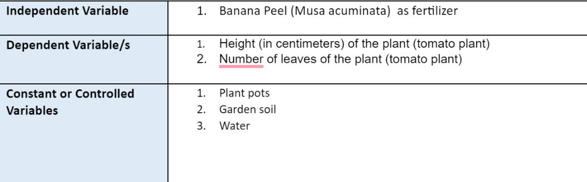

Banana Peels Set Up First Step: Collection of Banana Peels Second Step: Cut Banana Peels into smaller pieces Third Step: Add them into the pot with soil before adding the Tomato Plan
Composting Process of Banana Peels: 1. Gather/Collect 3-5 Banana Peels 2 Cut the banana peels into smaller pieces 3. Put aside the peels for at least 1 hour 4 Add the Banana Peels inside a container
Eggshells Set-up: First Step: Collection of Eggshells Second Step: Cleaning Process of the Eggshells Third Step: Lay the eggshells outside at the sun for a day Composting Process of Eggshells: First Step: Add 3-4 scoops of eggshells to the soil before adding the tomatoes Second Step: Put the eggshells in a container Third Step: Grind the eggshells to a blender
1 Gather 5-10 Eggshells 2 Wash eggshells with warm water to remove remaining egg whites 3 Lay the eggshells outside at the sun for a day 4. Crush or pulverize your eggshells completely 5. Add the powdered/crushed eggshells in a container Preparation for Pots 1 Gather 5 Pots around 15 inches 2. Name the pots the ABCs, use a scotch tape and marker in naming them for the experiment t organized 3. Label the controlled set up as Pot A 4 Label the experimental set up for the Banana Peels Pots 81, 82, 83 5 Label the experimental set up for the Eggshells Pots C1, C2, C3
Process:
1. Begin preparing your 5 weeks old tomato seedlings (Approximately 5 inches) 2. Prepare and input the correct amount of soil(around 3kg) in each pot. 3. For the controlled Set-Up, add 3kg of Loam Soil onto Pot A 4. For the experimental set-Ups, add 3kg of Loam soil onto Pots B1, B2, 83 and Pots C1, 5. For each set-up(Pot A, Pot B (b1,62,63), Pot C (c1,c2,63), repot the 5 week-old tomat inches of height)
6. Set aside Set-Up Pot A in a place that receives direct sunlight for the majority of the 7. Set-up Pots B1, 82,83 with the cut off banana peels prepared, add the pieces to the with another layer of loam soil. 8. Set aside Set Up Pot B1, B2,83 in a place that receives direct sunlight for the majorit 9. Set-up Pots C1, C2,C3 with the crushed eggshells prepared, add the crushed eggshell the root ball of the tomato plant, cover with loam soil. 10. Set aside Set-Up Pot C1, C2,C3 in a place that receives direct sunlight for the majority